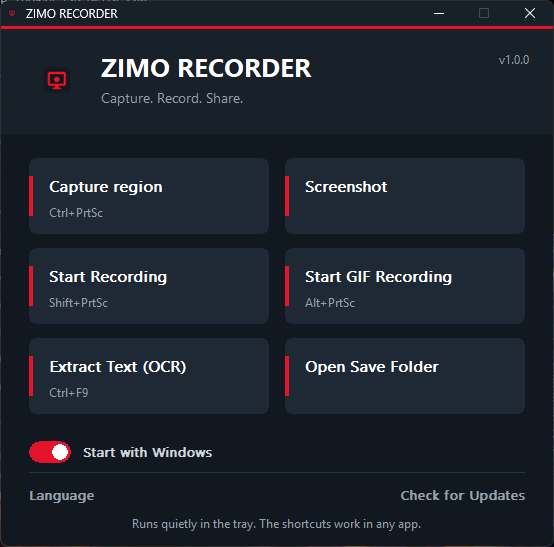

Screenshot tool & screen recorder for Windows
Capture any window or region, record MP4 or GIF, edit in one click and copy text from the screen. Lightweight, private and available in 15 languages.
Download for WindowsView on GitHub
Everything you need to capture your screen
Window & region capture
Hover a window to highlight it and click, or drag any area. Live size display on every selection.
MP4 & GIF recording
Record a window or region as video or an animated GIF, with pause and resume.
Instant editor
Arrows, lines, text and blur, then save or copy in one click.
Text recognition (OCR)
Select text on screen and it lands on your clipboard.
Always ready
Starts with Windows and waits in the tray. Your shortcuts work in any app.
15 languages
English, Persian, German, Russian, French, Spanish, Turkish, Arabic, Chinese, Italian, Portuguese, Japanese, Korean, Hindi, Dutch.
How to use it
Press a shortcut
Ctrl + PrtSc to take a screenshot, Shift + PrtSc to record.
Pick what to capture
Click a highlighted window or drag an area. Right-click while dragging to start over.
Edit, save or copy
Annotate in the editor. A notification opens the folder with your file selected.
Keyboard shortcuts
| Action | Shortcut | Backup |
|---|---|---|
| Screenshot (window or region) | Ctrl + PrtSc | Ctrl + F6 |
| Record video (MP4) | Shift + PrtSc | Ctrl + F7 |
| Record GIF | Alt + PrtSc | Ctrl + F8 |
| Extract text (OCR) | Ctrl + F9 |
Frequently asked questions
How do I take a screenshot of a single window on Windows?
Press Ctrl + PrtSc, hover over the window until it is highlighted, and click. The built-in editor opens so you can add arrows, text or blur, then save or copy.
How do I record my screen on Windows 11?
Press Shift + PrtSc, choose a window or area, and press the shortcut again to stop. The MP4 is saved automatically.
Can I make a GIF of my screen?
Yes. Press Alt + PrtSc, choose the area, and press it again to finish. The GIF is saved to your Videos folder.
Can I copy text from an image or the screen?
Yes. Press Ctrl + F9, select the text on screen, and it is copied to your clipboard using OCR.
Does ZIMO RECORDER upload my files?
No. There is no account and no cloud. Everything is saved on your own computer.
Which versions of Windows are supported?
Windows 10 and Windows 11 (64-bit).
Which languages does it support?
15 interface languages: English, Persian, German, Russian, French, Spanish, Turkish, Arabic, Chinese, Italian, Portuguese, Japanese, Korean, Hindi and Dutch.